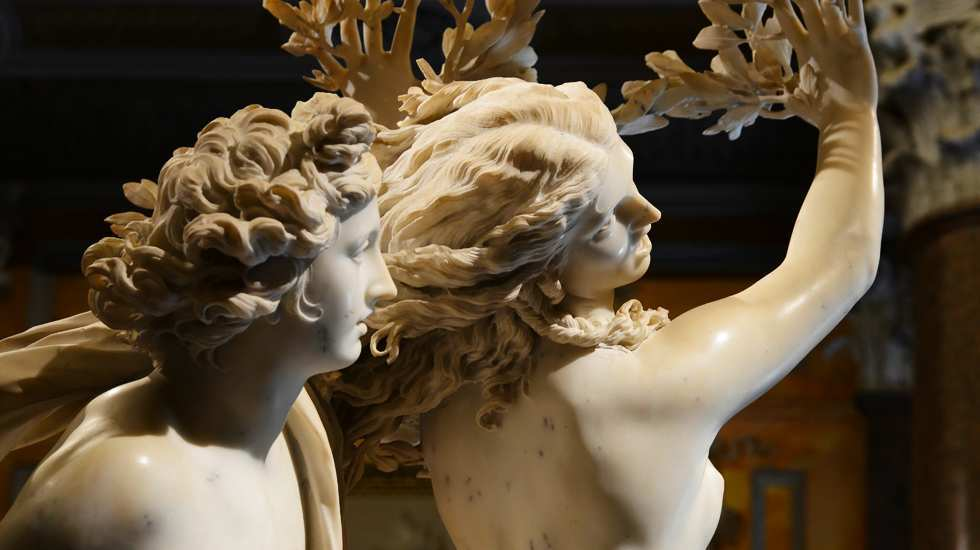

Apollo e Dafne

Inquadra il codiceQR per visualizzare l'immagine in realtà
aumentata
Soggetto del gruppo scultoreo è la favola di Ovidio tratta dalle Metamorfosi (I, 450-567), dove si narra di
Apollo che, a causa di una vendetta di Eros, è da lui colpito con una freccia d’oro – il metallo più nobile
–
che lo fa invaghire della ninfa Dafne, seguace di Diana. La fanciulla, invece, trafitta da un dardo del
vile
piombo, rifiuta l’amore del Dio e prega suo padre Peneo, divinità fluviale, di aiutarla a farle cambiar
quelle
sembianze che tanta passione avervano suscitato. L’opera rappresenta il momento culminante della
metamorfosi di
Dafne in albero di alloro. Bernini crea una messa in scena teatrale, nella quale l’occhio dello spettatore
segue
lo sviluppo della trasformazione: Apollo dopo la corsa ha raggiunto l’amata, che ha già mutato i suoi piedi
in
radici e le mani e i capelli in un’unica fronda. Lui tenta di afferarla, ma le sue dita sfiorano non il suo
corpo, ma la corteccia dell’albero. Da quel momento l’alloro diventerà caro al dio, che si cingerà il capo
con
le sue fronde, e sarà considerato attributo di artisti e poeti.In origine la scultura era collocata sul lato
della stanza contiguo alla cappella, poggiava inoltre su un basamento più basso dell‘attuale, espediente
utile
ad aumentare l’effetto scenografico e il coinvolgimento emozionale dello spettatore.